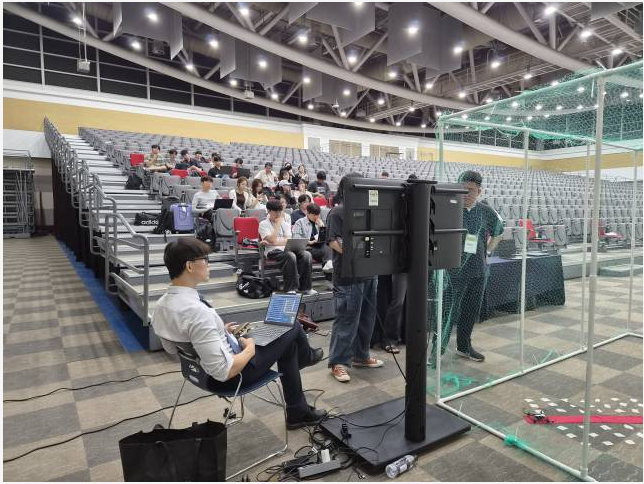
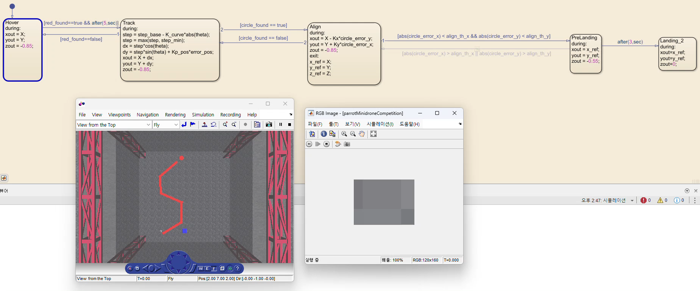
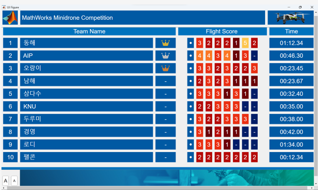
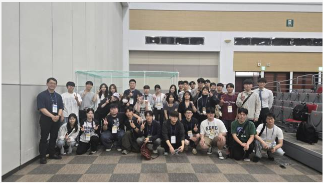

2026 MathWorks Minidrone Workshop
이 프로젝트가 채우는 로드맵 칸:
pipelineevidence→ Research Direction
Source
작업 폴더
C:\Archive\2026 Minidrone WorkShop발표자료Minidrone_Workshop.pptx(5장, 영상 4개) · 제출 프로젝트parrotMinidroneCompetition1.zip참가증전유식 (1).pdf· 대회 영상KakaoTalk_20260820_131631470.mp4· 실비행 로그droneFlight.txtMathWorks 측 진행 자료는 별도 링크에 있다. 이 노트에 옮기지 않는다 — 내 산출물이 아니다.
이 워크샵의 결론부터. 기체(Parrot Mambo)도, 6DOF 비선형 동역학 모델도, 위치·자세 제어기도, 센서/환경 모델도, 코드 생성 파이프라인도 MathWorks가 이미 다 구현하고 검증해서 준 상태로 시작한다. 참가자가 손대는 칸은 딱 두 개 — 영상처리와 Stateflow 미션 로직이다.
그래서 이 프로젝트는 제어를 깊게 판 기록이 아니다. 워크샵의 취지 자체가 그렇게 설계되어 있었다. 워크샵을 못 따라가서 제어를 안 건드린 게 아니라, 애초에 “Stateflow를 배워서 미션을 상태기계로 표현하라”에 방점이 찍힌다.
제어 깊이는 Capstone Otter USV 와 ANSL Undergraduate Research 쪽에 있고, 이 노트의 값어치는 “이미 검증된 제어기 위에 미션 계층을 어떻게 얹는가” 라는 다른 층위에 있다.
결과: 2인 1팀 「동해」로 참가, 10개 팀 중 종합 1위.
1. 개요
| 행사 | MathWorks Minidrone Workshop at ICROS 2026 |
| 일시·장소 | 2026-07-03 · EXCO, 대구 |
| 기체 | Parrot Mambo (minidrone) |
| 베이스 | MathWorks parrotMinidroneCompetition 예제 프로젝트 (© 2018–2024 The MathWorks, Inc.) |
| 툴 | MATLAB · Simulink · Stateflow · Simulink 3D Animation · Simulink Coder(기체 배포) |
| 카메라 | 하방 RGB 160 × 120 |
| 참가 형태 | 2인 1팀 — 팀명 「동해」 |
| 결과 | 종합 1위 (10개 팀) · 참가증(Certificate of Participation) |
워크샵이 그어 놓은 경계
이 표가 이 노트에서 제일 중요하다. 나중에 이 경험을 말할 때 반드시 이 선을 그어야 한다.
| 계층 | 누가 | 내용 |
|---|---|---|
| 기체·센서 | MathWorks | Mambo 하드웨어, 광류(optical flow), 소나 고도계, IMU |
| Plant 모델 | MathWorks | nonlinearAirframe / linearAirframe / 센서·환경 모델 |
| 제어기 | MathWorks | Position controller(외루프 위치 → 내루프 속도) + Attitude controller |
| 상태추정 | MathWorks | Estimator 서브시스템 |
| 코드 생성·배포 | MathWorks | flightControlSystem → Mambo 온보드 코드 |
| 영상처리 | 나 | HSV 임계 → 경로 오차·방향각·착륙원 검출 |
| 미션 로직 | 나 | Stateflow 5-state 상태기계, 위치 reference 생성 |
내가 만든 블록은 제어기가 아니라 reference generator 다.
영상에서 뽑은 픽셀 오차를 위치 명령(
xout,yout,zout) 으로 바꿔 넘기고, 실제 추력·자세 제어는 이미 검증된 제어기가 한다.

대회장. 그물 케이지 안에서 비행하고 바깥에서 노트북으로 배포·모니터링한다2. 미션
하방 카메라로 바닥에 그려진 빨간 경로를 따라가서, 경로 끝의 빨간 원(착륙 지점) 위에 정렬한 뒤 착륙한다. 랩타임과 비행 점수로 채점.
시뮬레이터(Simulink 3D)에서 먼저 완성하고 → 같은 모델을 코드 생성해 실기체에 올린다. 시뮬레이션 → 실물 이라는 점에서 Capstone Otter USV 와 같은 흐름이다.
3. 영상처리 — 내가 만든 것
Image Processing System 서브시스템. 입력은 카메라 RGB(160×120), 출력은 6개:
error_pos, theta, red_found, circle_found, circle_error_x, circle_error_y.
3.1 색 임계 — HSV 마스킹
colorThresholder 앱으로 뽑은 마스크를 MATLAB Function으로 넣었다.
빨강은 Hue 원의 0을 걸치므로 조건이 >= 또는 <= 로 갈라진다.
I = rgb2hsv(RGB);
sliderBW = ( (I(:,:,1) >= channel1Min) | (I(:,:,1) <= channel1Max) ) & ...
(I(:,:,2) >= channel2Min ) & (I(:,:,2) <= channel2Max) & ...
(I(:,:,3) >= channel3Min ) & (I(:,:,3) <= channel3Max);임계값이 하루 사이에 한 번 조여졌다. 프로젝트 안에 두 벌이 남아 있다.
07-02 생성본 (MATLAB Function) | 07-03 생성본 (MATLAB Function5, 활성) | |
|---|---|---|
| Hue | ≥ 0.907 또는 ≤ 0.064 (폭 0.157) | ≥ 0.960 또는 ≤ 0.030 (폭 0.070) |
| Saturation | 0 ~ 1 (제한 없음) | ≥ 0.384 |
| Value | 0 ~ 1 | 0 ~ 1 |
Hue 폭을 절반 이하로 줄이고, 채도 하한을 새로 걸었다. 채도 하한은 회색·흰색 계열 (바닥, 조명 반사)을 통째로 잘라내는 조건이다 — 즉 빨강이 아닌 것이 빨강으로 잡히는 문제를 만났고, 색상 폭이 아니라 채도로 끊는 쪽을 택했다는 뜻으로 읽힌다. 정확한 상황은 §9 참조.
3.2 경로 오차와 방향각
한 프레임을 두 개의 ROI로 나눠 본다.
넓은 ROI (행 20~80%) : 경로가 "어느 쪽으로" 뻗는가
p = polyfit(double(y), double(x), 1); % x = p1*y + p2
theta = -atan(p(1)); % 경로 기울기 → 각도error_pos는 픽셀 공간의 cross track error 다 → Cross Track Errortheta는 look-ahead 방향각. 아래쪽 ROI는 현재 오차, 위쪽까지 포함한 ROI는 진행 방향 — 가까운 것으로 오차를 잡고 먼 것으로 방향을 잡는 구조는 Pure Pursuit · LOS Guidance 와 같은 발상이다.- 직선 근사에서 y를 독립변수로 둔 게 포인트다. 경로가 화면에서 세로로 뻗기 때문에
y = f(x)로 두면 수직 경로에서 기울기가 발산한다. red_found = sum(BW(:)) > 50— 노이즈 몇 픽셀로 상태 전이가 일어나지 않게 하는 하한.
3.3 착륙원 검출 — Flood Fill + 원형도
경로와 착륙원은 둘 다 빨강이라 색으로는 못 가른다. 그래서 연결 성분으로 쪼갠 뒤
모양으로 판별한다. 4-neighbor flood fill을 명시적 스택으로 직접 구현했다
(bwconncomp, regionprops 같은 툴박스 함수를 쓰지 않고).
% 각 덩어리마다 area, 무게중심, bounding box를 모은 뒤
bbox_w = xmax - xmin + 1;
bbox_h = ymax - ymin + 1;
aspect_error = abs(bbox_w - bbox_h) / max(bbox_w, bbox_h); % 정사각형에 가까운가
r_circle = (bbox_w + bbox_h) / 4;
expected_area = pi * r_circle^2;
area_error = abs(area - expected_area) / expected_area; % 채움률이 원에 맞나| 조건 | 값 | 의미 |
|---|---|---|
min_area / max_area | 50 / 3000 px | 노이즈와 경로 본체를 양쪽에서 잘라낸다 |
aspect_tol | 0.35 | bbox 가로세로 차이 35% 이내 → 길쭉한 경로 탈락 |
area_tol | 0.45 | 실제 면적이 πr² 대비 45% 이내 → 속이 비거나 찌그러진 덩어리 탈락 |
두 조건을 통과한 것 중 가장 큰 덩어리를 착륙원으로 잡고,
circle_error_x = cx - w/2, circle_error_y = cy - h/2 로 화면 중심 대비 오차를 낸다.
원형도 판정이 이 워크샵에서 유일하게 "알고리즘을 내가 설계한" 지점이다.
색이 같은 두 물체를 종횡비 + 면적비 두 개의 스칼라로 갈랐다.
4. Stateflow — 미션 상태기계
Control System/Path Planning/Chart. 워크샵의 본론.

4.1 상태
| 상태 | during (매 스텝 내보내는 위치 명령) | 하는 일 |
|---|---|---|
Hover | xout=X; yout=Y; zout=-0.85 | 현재 위치를 잡고 0.85 m 고도 유지 (NED이므로 z 음수 = 위) |
Track | 아래 코드 | 경로 추종 |
Align | xout=X - Kx*circle_error_yyout=Y + Ky*circle_error_x | 착륙원 정중앙으로 미세 이동 |
PreLanding | xout=x_ref; yout=y_ref; zout=-0.55 | 수평 고정 후 0.55 m까지 하강 |
Landing_2 | xout=x_ref; yout=y_ref; zout=0 | 수평 유지한 채 z=0 착륙 |
Track 의 during:
step = step_base - K_curve*abs(theta); % 굽은 구간에서 전진량을 줄인다
step = max(step, step_min); % 하한 — 커브에서 멈춰버리지 않게
dx = step*cos(theta);
dy = step*sin(theta) + Kp_pos*error_pos; % 방향 성분 + 횡방향 오차 보정
xout = X + dx;
yout = Y + dy;
zout = -0.85;Align 의 exit: 에서 x_ref = X; y_ref = Y; z_ref = Z 로 그 순간의 위치를 얼려서
PreLanding / Landing_2 가 그 값만 계속 내보낸다. 하강 중에 영상이 흔들려도
수평 위치가 밀리지 않게 하는 장치다.
4.2 전이 조건
Hover ──[red_found==true && after(5,sec)]──▶ Track
Hover ◀──────[red_found==false]──────────── Track
Track ──────[circle_found==true]──────────▶ Align
Track ◀─────[circle_found==false]───────── Align
Align ──[abs(circle_error_x)<align_th_x && abs(circle_error_y)<align_th_y]──▶ PreLanding
Align ◀─[abs(circle_error_x)>align_th_x || abs(circle_error_y)>align_th_y]── PreLanding
PreLanding ────────[after(3,sec)]─────────▶ Landing_2
되돌아오는 화살표가 전부 있다는 게 설계의 핵심이다. 경로를 놓치면 Hover 로,
정렬이 틀어지면 Align 으로 돌아간다 — 한 프레임의 오검출로 착륙이 진행돼버리지 않는다.
after(5,sec) 는 이륙 직후 자세가 안정되기 전의 영상을 신뢰하지 않겠다는 뜻이다.
4.3 파라미터
| 이름 | 값 | 역할 |
|---|---|---|
step_base | 0.45 | 직선에서의 1스텝 전진 거리 |
step_min | 0.05 | 커브 감속의 하한 |
K_curve | 0.15 | 곡률(abs(theta)) 감속 게인 |
Kp_pos | 0.002 | 픽셀 오차 → 미터 보정 (P 게인) |
align_th_x / align_th_y | 5 / 5 px | 착륙 진입 허용 오차 |
Kx / Ky | 0.003 / 0.003 | 정렬 게인 (픽셀 → 미터) |
Kp_pos = 0.002 는 사실상 단위 환산 게인이다 — 160픽셀 폭 화면에서 최대 80픽셀
오차가 약 0.16 m 위치 보정이 된다.
5. 결과
🏆 10개 팀 중 종합 1위
2인 1팀 「동해」. 기록 01:12.34.

대회 스코어보드 — 상위 3팀(동해 / AIP / 오랑이)에 왕관 표시스코어보드는 랩타임 순이 아니다. 1위 동해가 01:12.34인데 3위 오랑이는 00:23.45다.
즉 Flight Score(미션 단계별 점수)가 먼저 정렬되고 시간은 그다음 이다 —
빨리 나는 것보다 Track → Align → 착륙 을 끝까지 통과시키는 쪽이 이기는 채점이었다.
§4의 되돌아오는 전이(경로 놓치면 Hover, 정렬 틀어지면 Align)를 다 그려 넣은
설계가 그대로 성적으로 돌아온 셈이다.
🎥 최종 비행 영상 — 아직 안 넣음
1위 비행 원본 영상이 핸드폰에 있다. 옮겨서 여기에 넣을 것. 넣을 자리는 바로 이 칸이고, 파일명은
_attachments/Minidrone-Workshop/2026-07-03-competition-flight.gif. 볼트 관례대로 배속 GIF(360 px · 10 fps) 로 변환해서 임베드하고, 원본.mp4는_attachments/에 그대로 둔다 (.gitignore가*.mp4를 빼므로 저장소엔 GIF만 올라간다).Minidrone_Workshop.pptx슬라이드 5「대회 영상」과 작업 폴더의KakaoTalk_20260820_131631470.mp4도 같은 영상인지 확인할 것. 이 노트는 이 영상이 들어가기 전까지 미완성이다.
그 밖에
- 시뮬레이션에서
Hover → Track → Align → PreLanding → Landing전 구간 통과 - 코드 생성 → Parrot Mambo 실기체 배포 → 대회 비행 완료
- 실비행 로그
droneFlight.txt에 온보드 실행 흔적이 남아 있다 (rsedu_control스레드, 소나 고도, 광류 FIFO 연결, 배터리 4.19 V / 100%,INIT libVision with [160 x 120])

참가자 단체 사진6. 남아 있는 반복의 흔적 — 영상처리 함수 4벌
Image Processing System 안에 비활성(commented) 블록 4개가 그대로 남아 있다.
버려진 게 아니라 개발 순서의 기록이라 지우지 않고 적어 둔다.
| 블록 | 상태 | 무엇이 달랐나 |
|---|---|---|
MATLAB Function1 | 비활성 | 위쪽 ROI 두 개(mid/far)만 사용. error_pos + error_dir(먼 쪽 − 가까운 쪽). 각도 개념 없음, red_count > 20 |
MATLAB Function3 | 비활성 | ROI를 아래(60polyfit 도입 → theta 등장. 원 검출 없음 |
MATLAB Function2 | 활성 | 위 + flood fill 착륙원 검출 추가. 최종본 |
MATLAB Function4 | 비활성 | MATLAB Function2 와 결과는 같고 구현만 다름 — find/mean/polyfit을 전부 없애고 한 번의 이중 루프에서 Σy, Σx, Σy², Σyx 를 직접 누적해 최소자승 기울기를 손으로 계산 |
MATLAB Function4 의 최소자승:
denom = N*sum_yy - sum_y*sum_y;
slope = (N*sum_yx - sum_y*sum_x) / denom; % polyfit(y, x, 1) 의 1차 계수와 동일
theta = -atan(slope);오차 정의가
error_dir(두 ROI의 x 차이) →theta(직선 근사 각도) 로 바뀐 게이 프로젝트에서 제일 실질적인 설계 변경이다. 차이값은 ROI 위치에 흔들리지만, 각도는 경로 전체를 하나의 직선으로 요약한다.
7. 배운 것
- 미션 계층은 제어기와 분리해서 설계할 수 있다. 제어기를 건드리지 않고 위치 reference만 갈아끼우는 것으로 완전히 다른 임무가 나온다. 이 경계는 AMET2026 Physicar 에서 planner를 공식 스택 위에 얹은 구조와 같은 발상이다.
- Stateflow는
if뭉치의 예쁜 대안이 아니라 되돌아올 길을 강제하는 도구다. 상태를 그리면 “이 상태에서 조건이 깨지면 어디로 가나”를 안 적을 수가 없다. 순차 코드로 짰다면 복구 경로를 빼먹었을 것이다. - 색이 같은 두 물체는 기하로 가른다. 종횡비·면적비 두 스칼라면 충분했다.
- UAV를 한 번 다뤘다. Capstone Otter USV · [ROS2 USV Term Project], AMET2026 Physicar · [DSC Autonomous Driving]에 더해 지상·해상·공중을 전부 만져 본 셈이 된다. 좌표계(NED), 위치–속도 캐스케이드, 영상 기반 경로추종은 플랫폼이 바뀌어도 그대로 나왔다 — Research Direction 의 “플랫폼 전문성은 출발점이지 감옥이 아니다”에 붙는 실물 근거.
8. 막힌 것 / Blockers
파일에 흔적이 남은 것 하나:
- HSV 임계가 07-02 → 07-03 사이에 조여졌다. Hue 폭 0.157 → 0.070, 채도 하한 0 → 0.384. 색상 범위를 좁히는 대신 채도로 끊었다는 건 무채색 오검출이 문제였다는 뜻이다. 구체적으로 무엇이 잘못 잡혔는지는 §9.
대회 당일 비행에서 실제로 무엇이 깨졌는지는 파일에 남아 있지 않다. → §9
9. ❓ 확인 필요
- 🎥 최종 비행 영상 첨부 (핸드폰 →
_attachments/, §5 참조). 이게 제일 우선. - 2인 1팀에서 역할 분담. §3(영상처리)·§4(Stateflow)를 전부 “내가 만든 것”으로 적어 뒀는데, 팀원과 나눠 짰다면 그 선을 그어야 한다 — 볼트 규칙상 이건 필수다
- 07-03에 색 임계를 다시 딴 이유. 대회장 조명? 바닥 재질? 무엇이 빨강으로 오검출됐나
-
MATLAB Function4(직접 최소자승 루프)를 왜 만들었다가 껐나. 코드 생성에서polyfit/find가 걸렸나, 속도 문제였나, 그냥 실험이었나 → 답이 나오면 §8 Blockers 로 옮길 것 - 워크샵이 하루였나 이틀이었나. 참가증은 07-03, colorThresholder 코드는 07-02와 07-03 양쪽에 있다
10. 관련 노트
- Research Direction —
pipeline·evidence. 시뮬레이션 모델을 코드 생성해 실기체로 이식하고 대회에서 1위로 검증했다. 다만 여기 있는 숫자는 순위와 기록이지 “기존 대비 tracking error 몇 % 감소” 같은 비교 숫자는 아니다 —evidence칸이 요구하는 정량 비교는 여전히 Capstone Otter USV 쪽에서 채워야 한다. - Cross Track Error —
error_pos가 픽셀 공간의 CTE - Pure Pursuit · LOS Guidance — 가까운 ROI로 오차, 먼 ROI로 방향을 잡는 구조
- AMET2026 Physicar — 주어진 스택 위에 내 계층을 얹는 같은 구조 (UGV)
- Capstone Otter USV — 시뮬레이션 → 실물 이식의 같은 흐름 (USV)
- Learning Path · Home